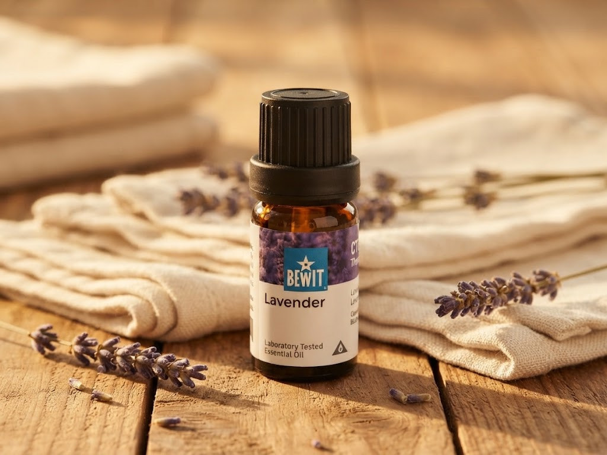

🌿 Lekce 24
čisté prádlo bez zbytečné chemie
Ukážu vám tři recepty — gel na praní, prášek na bílé prádlo a aviváž.

Průmyslově vyráběné prací prostředky a gely obsahují bělicí složky, které mohou dráždit kůži, oči i dýchací cesty — nejsou vhodné pro alergiky ani citlivou pokožku dětí. Tady jsou tři přírodní alternativy. Poznámka: v receptech se často uvádí „šálek" — 1 šálek je přibližně 2 dcl.
1 mýdlo na praní (např. kastilské, žlučové Jelen).
300 g práškové sody na praní.
15 kapek LAUNDRY CITRUS nebo jiné svěží směsi jako E-SMO či FRESH, případně citrusového esenciálního oleje — vynikající je Rozmarýn, Levandule a Ylang-Ylang.
10 litrů vroucí vody.
Mýdlo najemno nastrouhejte a rozmíchejte v menším množství vroucí vody.
Po rozpuštění přimíchejte sodu, opět míchejte až do úplného rozpuštění, následně postupně přilívejte vroucí vodu.
Po vychladnutí přidejte esenciální olej. Nechte odstát 24 hodin.
Používejte čtvrtinu až polovinu šálku na jednu prací dávku. Přesné dávkování závisí i na výkonnosti pračky, zašpinění a množství prádla.
100 g mýdla na praní (např. kastilské, žlučové atd.).
1 kg práškové sody na praní.
500 g perkarbonátu sodného.
15 kapek LAUNDRY CITRUS, FRESH nebo jiného esenciálního oleje dle výběru — vynikající je Rozmarýn, Levandule, Ylang-Ylang, Bergamot, Citron, Mandarinka a Eukalyptus.
Mýdlo najemno nastrouhejte a smíchejte se všemi ingrediencemi.
Skladujte v dóze v suchu.
Dávkujte o polovinu menší množství, než jste byli zvyklí u běžného prášku.
250 ml destilované vody.
250 ml octa.
10 kapek LAUNDRY CITRUS či jiného oblíbeného esenciálního oleje, například Benzoin, Levandule, Pomeranč, Mandarinka, Eukalyptus.
Smíchejte ocet s vodou, přelijte do dózy či lahve a nakapejte esenciální olej.
Přidávejte při praní do přihrádky na aviváž, asi 2 PL nebo podle potřeby. Před použitím protřepejte.
Další lekce: Čistá domácnost — pokračovat →